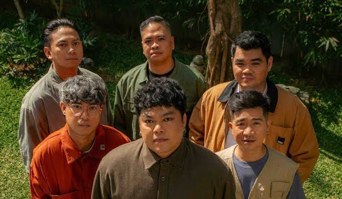
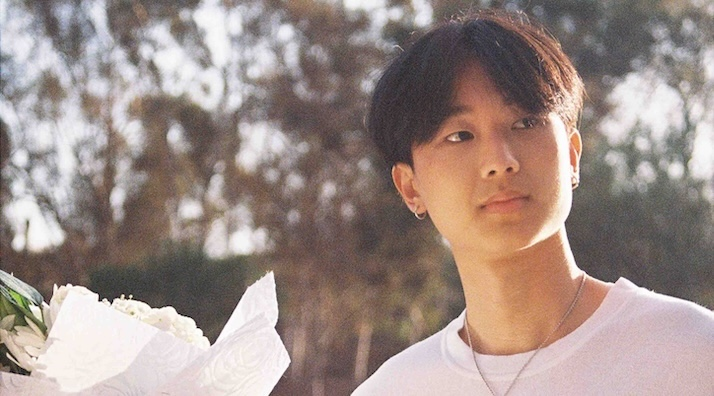
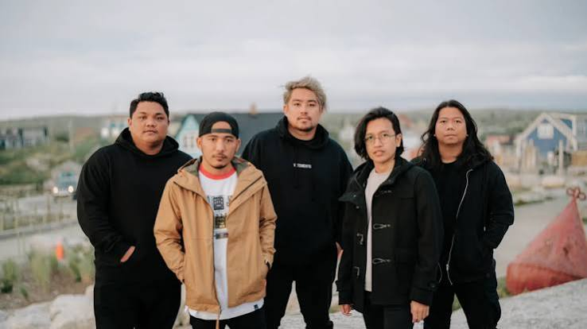

- a 6 member opm band using a dramatic and emotional genre of music with hits like Ikaw lamang

- a single artist with a calm and relaxed vibe with hits like Blue

- a 5 member opm band making emotional-styled rock songs like Huling Sandali
© 2026 My Favorite Artists | Created by Isaac Nathaniel Magpoc Arias 9 Emerald